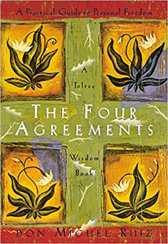

Library › Self-Improvement
The Four Agreements — Summary & Key Lessons

A practical guide to personal freedom — four Toltec agreements that dismantle a lifetime of self-limiting programming.
📖 OPEN THE FULL INTERACTIVE BREAKDOWN →🌐 Read it in Hindi, Hinglish, Gujarati, Tamil & 22 more languages — free, with audio.
💡 The Big Idea
Ruiz's Toltec framework begins with a diagnosis: childhood 'domestication' — through reward and punishment, we internalized thousands of agreements about who we are and what's possible, enforced by an inner Judge and suffered by an inner Victim, until we self-domesticate without any outside enforcer. The dream of the planet (society's collective belief-fog) runs us. Freedom comes from replacing the inherited agreements with four deliberate ones: BE IMPECCABLE WITH YOUR WORD (the word is creative force — use it without sin against yourself or others), DON'T TAKE ANYTHING PERSONALLY (everything others do is a projection of their own dream), DON'T MAKE ASSUMPTIONS (ask questions; assumptions breed the poison of most conflict), and ALWAYS DO YOUR BEST (which varies daily — and self-judgment ends where honest best begins). Simple to state, revolutionary to live.
🧠 The 6 Key Lessons
Lesson 1: The Domestication: How Your Agreements Were Installed
Chapter 1: Domestication and the Dream of the Planet
Before the agreements comes the audit: as children, we never chose our beliefs — language, religion, values, self-image were installed by repetition, reward ('good boy'), and punishment, until we AGREED to them. That agreement is the hook: information only becomes program when we consent — but children consent to everything (adults hold the authority and the affection). Eventually the outer domesticators become unnecessary: the inner JUDGE prosecutes us with the old rulebook, the inner VICTIM absorbs the verdicts ('I'm not good enough' — the master agreement under most others), and we pay for each mistake thousands of times (humans are the only species that punishes itself repeatedly for a single error). The way out isn't fighting the whole fog at once: each old agreement is dismantled by refusing renewal — and replaced, one by one, with agreements you actually choose.
📖 Example: Ruiz's mirror scene: a child told once 'your voice is ugly' can carry the agreement for decades — never singing again, organizing a life around one sentence spoken by a tired adult. Multiply by ten thousand sentences and you have a personality: not a self,… Read the full example →
⚡ Do this: Surface the inventory: complete these stems fast, without editing — 'I'm the kind of person who can't...', 'People like me don't...', 'I've always been...'. Circle the entries you never actually chose. Pick the most expensive one and formally revoke it in writing — the counter-agreement starts today.
Lesson 2: Agreement One: Be Impeccable With Your Word
Chapter 2: The First Agreement
The word is your creative power — through it you build or poison, and 'impeccable' means literally 'without sin': without using the word against yourself or others. The scope is wider than honesty: gossip is 'black magic' (spreading emotional poison and recruiting agreement against others), self-directed word-sin is the most common (every 'I'm so stupid' is a spell you cast and then live under), and the word's power compounds — one opinion, delivered with authority to a hooked mind, can redirect a life (which is exactly how domestication worked). Impeccability practiced: speak with integrity, say only what you mean, refuse the gossip economy (both exporting and importing), and turn the word's creative force toward truth and love — starting with how you speak ABOUT yourself, since the self is the word's most frequent audience. Master this one, Ruiz says, and the other three follow; it's the hardest and the most powerful.
📖 Example: Ruiz's illustration of the word-as-spell: a mother, exhausted, snaps at her singing daughter — 'shut up, you have an ugly voice.' The girl agrees (mother = authority), stops singing for decades, builds shyness around the verdict. One sentence, one hook, one… Read the full example →
⚡ Do this: Run a 7-day word fast: zero gossip (exported or consumed — leave the conversation), zero self-insults (catch 'I'm an idiot' mid-flight and restate factually: 'I made an error'). Each night, one line: where did my word create today, and where did it poison?
Lesson 3: Agreements Two & Three: Nothing Personal, No Assumptions
Chapters 3–4: The Second and Third Agreements
The middle agreements dismantle interpersonal suffering. DON'T TAKE ANYTHING PERSONALLY: what others say and do — including praise — is a projection of THEIR dream: their agreements, wounds, and weather. Personal importance ('everything is about me') is the ego's error that makes you eat every stranger's emotional garbage; immunity means even insults land as information about the speaker ('what you think of me is none of my business'). The freedom is double-edged and total: neither criticism nor flattery should steer you, because both describe the mirror, not you. DON'T MAKE ASSUMPTIONS: the mind abhors uncertainty and fills gaps with invention — then believes the invention and takes IT personally (the complete misery loop: assume, believe, resent). Whole relationships run on assumption ('if they loved me, they'd know') — expecting mind-reading while never asking. The antidote is embarrassingly simple: ASK. Have the courage to question until clarity, and say what you actually want. Most drama dies at the first honest question.
📖 Example: Ruiz's street scene for agreement two: a stranger calls you stupid — if it hooks you, it's because somewhere you already agree; the stranger merely found the wound. The same insult to a person without that agreement evaporates like weather. For agreement… Read the full example →
⚡ Do this: Install the two circuit-breakers: (1) When stung this week, ask 'whose dream is this about?' before responding — find the agreement in YOU that let it hook. (2) Catch three assumptions before they become beliefs: each time you notice 'they probably think/meant...', convert it to a direct question within 24 hours.
Lesson 4: Agreement Four: Always Do Your Best (Which Changes)
Chapters 5–7: The Fourth Agreement / Breaking Old Agreements
The fourth agreement powers the other three: ALWAYS DO YOUR BEST — with the liberating clause that your best VARIES: sick versus healthy, grieving versus rested, morning versus midnight. Do the honest best of THIS moment, 'no more and no less': more (overexertion against your current reality) depletes and backfires; less feeds the Judge. Its function is judicial: when you know you did your best, self-judgment loses jurisdiction — no material for the Judge, no case for the Victim, no punishment loop. Action itself transforms: doing your best for the doing (not the reward) converts work from sacrifice into expression. Ruiz's closing architecture: breaking old agreements takes repetition (the old ones were installed by repetition and are broken the same way), forgiveness of self and others is the practical exit from the past's poison, and the goal-state — the 'new dream' — is a life where the four agreements run as automatically as the domestication once did. You practice, you fail, you begin again: doing your best AT the four agreements is the fourth agreement.
📖 Example: Ruiz's parable of the man who wanted to transcend suffering: told by a master he'd succeed if he meditated four hours daily for years, he asked — and if I do my best in less? The reframe lands the chapter: it was never the hours; it was the wholeheartedness.… Read the full example →
⚡ Do this: Close each of the next seven days with the two-line verdict: 'Given today's actual conditions, was that my best? What would tomorrow's best look like?' If yes — case dismissed, by agreement. If no — adjust tomorrow's plan, not tonight's self-worth.
Lesson 5: The Dream of the Planet: You Are Not Its Dream
Part 1: The Domestication of Humans
Before the four agreements, Ruiz explains the problem they solve: the 'Dream of the Planet' — the shared, socially inherited story of how life should be, passed down through parents, schools, media and religion. As children we are domesticated into this dream: rewarded for behaving, punished for questioning, until we believe the dream is reality. Most people live their whole lives inside other people's expectations, never noticing they are dreaming someone else's dream. The first act of freedom is realizing that the story you live is a story — and stories can be rewritten. You are not the dream; you are the dreamer.
📖 Example: Ruiz describes how a child who asks 'why?' is told 'because I said so' — the moment the dream replaces understanding with obedience. By adulthood, most people cannot even identify which of their beliefs are genuinely theirs. Read the full example →
⚡ Do this: Pick one belief you hold about success, money or family, and ask: 'Did I choose this, or was I domesticated into it?' Journal the honest answer.
Lesson 6: The Toltec Path to Freedom: Breaking the Old Agreements
Part 2: The New Dream
The four agreements are not a checklist — they are a path of re-domestication, replacing the fear-based agreements of childhood with love-based ones. Ruiz warns that breaking old agreements takes time and awareness: you will catch yourself breaking the new ones, and that awareness itself is the practice. Each agreement mastered dissolves a layer of the old dream: impeccable words dissolve guilt, taking nothing personally dissolves hurt, no assumptions dissolves conflict, doing your best dissolves regret. Freedom is not a destination you reach; it is a direction you walk, day by day, forgiving yourself for stumbling.
📖 Example: Ruiz uses the metaphor of detox: the old agreements are an addiction to suffering, and breaking them produces withdrawal — guilt, resistance, doubt. The person who persists through the withdrawal eventually experiences life with a lightness they had… Read the full example →
⚡ Do this: Choose ONE agreement to work on this week. Each night, note one moment you kept it and one you broke — awareness, not perfection, is the win.
✅ 5-Step Action Plan
- Inventory the inherited agreements; revoke the most expensive one.
- Seven-day word fast: no gossip, no self-insults, nightly audit.
- Trace every sting to its inner agreement; question three assumptions.
- Apply the variable-best clause; dismiss the Judge when best was given.
- Repeat daily — the new agreements install exactly like the old ones did.
💬 Best Quotes from The Four Agreements
- “Be impeccable with your word.”
- “Nothing others do is because of you. What others say and do is a projection of their own reality.”
- “Under any circumstance, always do your best, no more and no less.”
Interactive version: mark lessons as read, listen in your language, share quote cards.